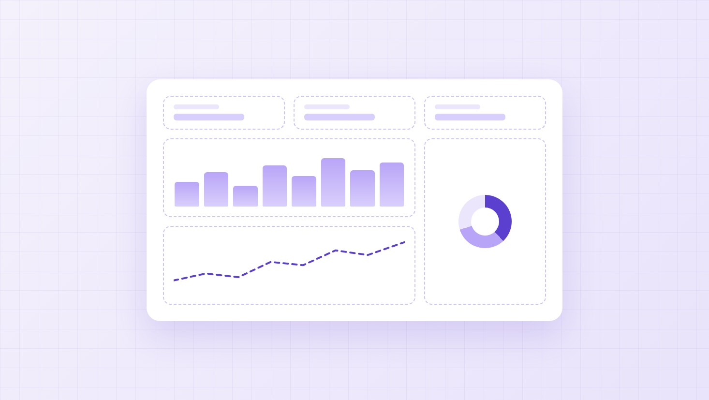

Dónde, cuándo y por qué ocurren los accidentes en las carreteras de Brasil, para planear rutas logísticas.
Bogotá, Colombia
Ambar Quintana
Business Intelligence Developer
Construyo soluciones de BI de punta a punta: procesos ETL, modelos de datos y dashboards en Power BI, con foco en rendimiento y calidad del dato.
- +80M
- Registros procesados en soluciones ETL
- +70%
- Mejora en rendimiento de ETL y dashboards
- +9 años
- Experiencia trabajando con datos
Sobre mí
Más que dashboards
Una buena solución empieza por entender cómo opera el negocio, no por la herramienta.
Soy Ingeniera BI con experiencia en analítica e ingeniería de datos para entornos corporativos. Veo los datos como uno de los activos más valiosos de las organizaciones y me especializo en crear soluciones que acerquen la información a quienes toman decisiones con ella.
Disfruto construir procesos end-to-end que sean claros, eficientes y fáciles de mantener. En mi trabajo integro información de diferentes fuentes combinando SQL avanzado (SQL Server/PostgreSQL), Power BI (Desktop y Service), SSIS y modelado dimensional para impulsar la eficiencia operativa y aportar claridad estratégica en distintas áreas de negocio. A lo largo de mi trayectoria he colaborado tanto con perfiles técnicos como con equipos de negocio en sectores como Capital Humano, Retail y Educación.
Fuera del entorno laboral, me encanta aprender sobre el arte de los bonsáis y conocer diferentes lugares de Colombia, así que mis vacaciones han sido la excusa perfecta para descubrir nuevos rincones del país. Sin duda, Colombia es un país hermoso.
Proyectos
Del dato crudo al dashboard
Proyectos personales enfocados en Business Intelligence, modelado de datos, procesos de ETL y automatización.

En construcciónSupply Chain
Inventario, compras y distribución de CEDIs a tiendas, con rotación y niveles de stock.
En construcción
People Analytics
Rotación, nómina y desempeño del talento para apoyar las decisiones de RR. HH.
En construcción
Analítica de Campañas
Envíos, lecturas y respuestas de campañas de mensajería en un contact center.
Experiencia
Mi trayectoria profesional
Un recorrido por mi experiencia trabajando con datos y los principales logros de mi trayectoria profesional.
-
Business Intelligence Developer
Somos Gente Digital
Educación- Construí soluciones BI end-to-end combinando ETL multicapa en SSIS, modelado dimensional y reportes en Power BI.
- Reduje en más de 70% los tiempos de ejecución de ETL en SSIS (+80M de registros) y en 80% la respuesta de reportes en Power BI.
- Migré las capas staging y DW de SQL Server on-premise a AWS Aurora PostgreSQL tras un cambio de arquitectura de datos.
- Administré Power BI Service con RLS y gobierno de datos, integré reportes con Microsoft Entra y creé flujos en Power Automate.
-
Experienced Data Engineer
NEORIS
Banca- Migré 3 bases de datos (1.2 TB) de SQL Server 2012 a 2019 con SSIS, validando la integridad de los datos por conciliación de registros.
- Modernicé el código de procedimientos, funciones y vistas para asegurar su compatibilidad con SQL Server 2019.
-
SQL Server Developer Semi Senior
GM Robotic
Recursos Humanos- Diseñé modelos de datos y procesos ETL en SSIS 2019 para integrar y migrar datos desde diferentes fuentes (+3M de registros).
- Creé procedimientos en SQL Server, informes en SSRS y optimicé consultas críticas con planes de ejecución y SQL Server Profiler.
-
SQL Server Developer
Raxione
Retail- Diseñé el modelo de datos y los procedimientos en SQL Server para un sistema de ventas y comisiones.
- Desarrollé reportes analíticos para el seguimiento del desempeño de los vendedores.
-
Database Developer
GM Robotic
Recursos Humanos- Diseñé el modelo relacional de un sistema de gestión de personal y desarrollé procedimientos, vistas, funciones y jobs en SQL Server.
- Optimicé consultas con planes de ejecución y SQL Server Profiler, y gestioné roles y permisos.
Habilidades
Stack técnico
Herramientas y tecnologías con las que construyo soluciones de datos, desde el origen hasta el dashboard.
Power BI
Dashboards · DAX · RLS · Report Builder · Power Query
SQL
Joins · CTEs · Agregaciones · Window Functions
Integración de datos
SQL Server · PostgreSQL · SharePoint · APIs
Modelado de datos
Dimensional · Semántico · Star & Snowflake Schema
ETL
SSIS · Limpieza · Transformación · Integración · Multicapa · Medallion
Power BI Service
Workspaces · Aplicaciones · Roles · Gobierno de datos
Python
Pandas · NumPy · Jupyter · Automatización
Power Automate
Flujos · Automatización · Integración · Procesos
Excel
Power Query · Power Pivot · Tablas dinámicas
Figma
Diseño de dashboards · Prototipado · UI/UX
Confluence · Jira · Git
Scrum · Documentación · Control de versiones
Inteligencia artificial
Claude · Claude Code · Agent Skills · MCP · Prompt engineering
Certificaciones
Aprendizaje respaldado
Certificaciones que respaldan mi formación continua en análisis e ingeniería de datos, SQL y metodologías ágiles.